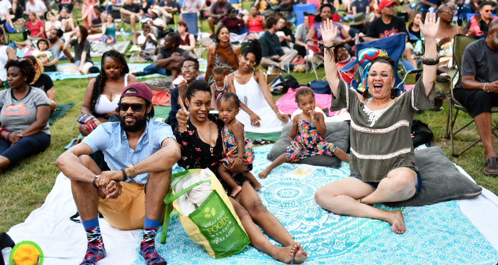
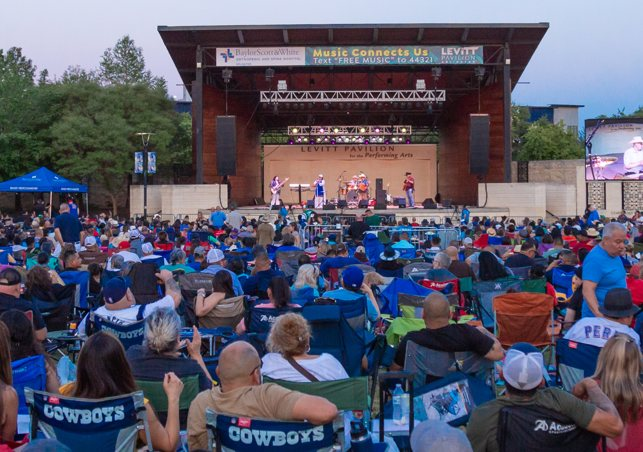
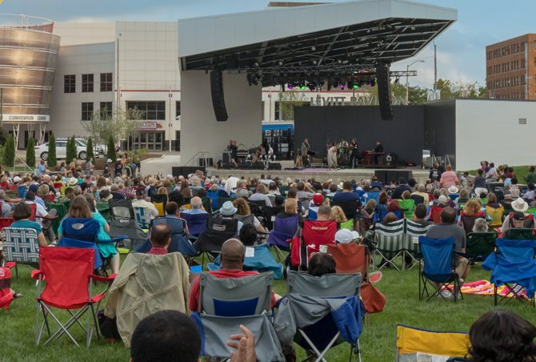
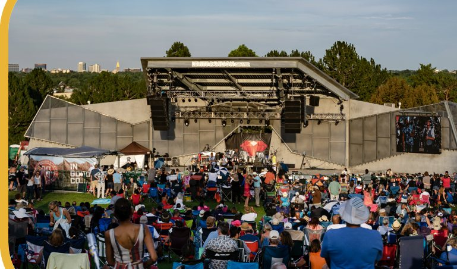
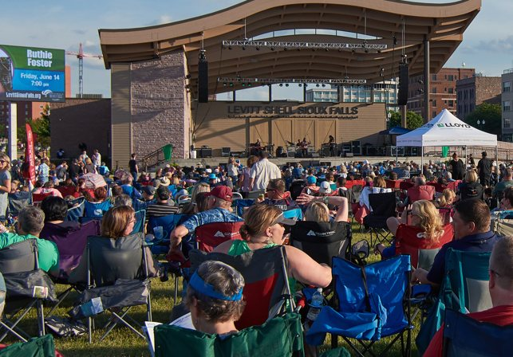
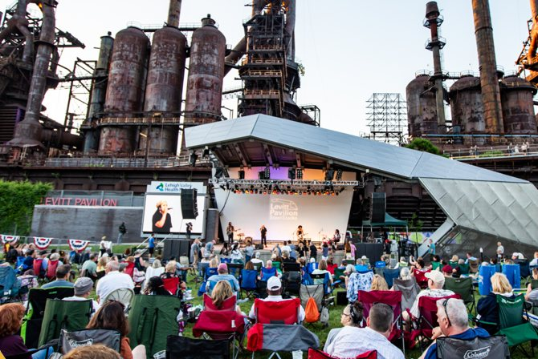
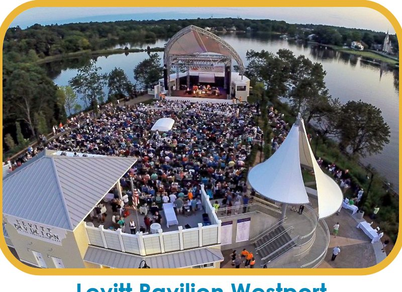
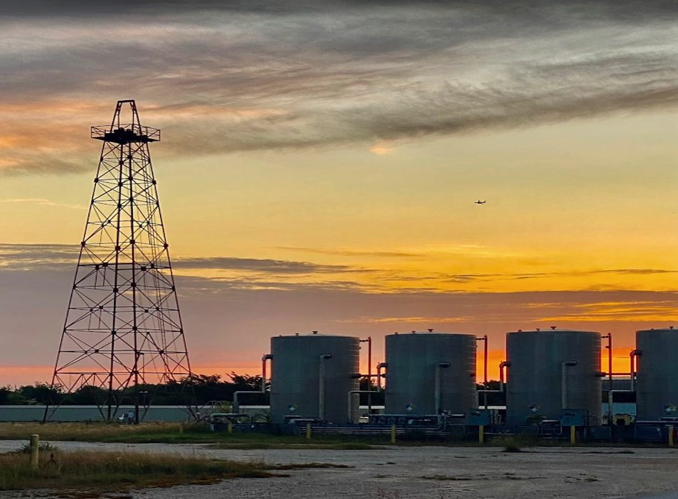
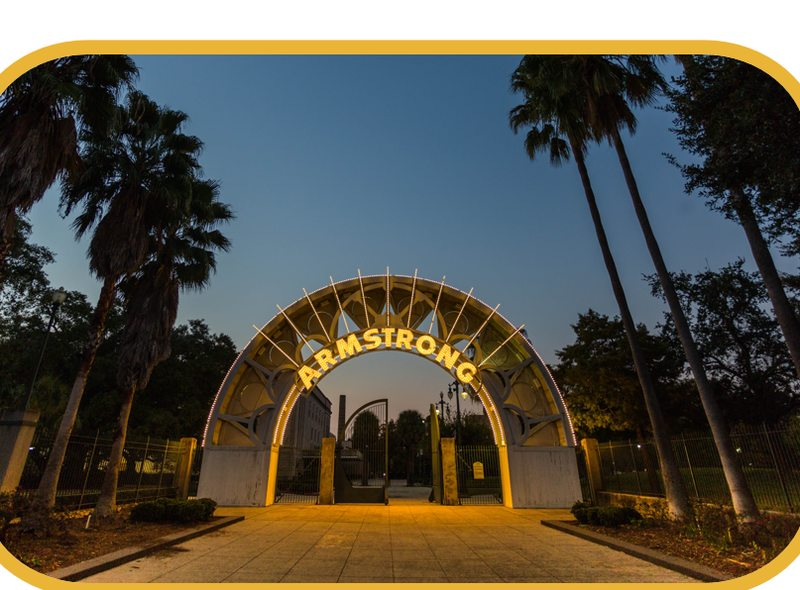
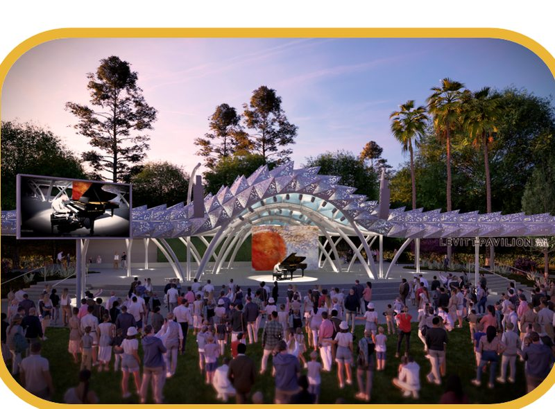

Across the country, Levitt venues bring people together through free outdoor concerts in welcoming public spaces. Each venue is shaped by its own city, but all share the same purpose: creating connection through music.
Levitt Pavilion Houston will be both a cultural and financial asset for the city and Southwest Houston. The Levitt Foundation provides capital and operational support as part of a national network built on long-term investment in the communities it serves. Beyond concerts, Levitt venues elsewhere in the network have become catalysts for surrounding development, new restaurants and retail, and renewed civic pride in the neighborhoods around them. Southwest Houston stands to see the same kind of momentum.
New restaurants, retail, and investment often follow a Levitt venue into the neighborhood around it.
A signature public space becomes a source of pride and a fresh identity for the surrounding community.
The Levitt Foundation’s capital and operational support is a long-term commitment, not a one-time gift.
Levitt Houston is joining this national network with a permanent outdoor venue planned beside Willow Waterhole Greenway. The Houston pavilion will carry the Levitt promise forward through 40 free professional concerts each year, shaped by the music, communities, and character of Southwest Houston.

“An open lawn where friends, families and neighbors of all ages and backgrounds gather to experience free live music together.” The Levitt idea, in one sentence

Arlington, Texas
Free concerts fill downtown Arlington’s gathering place, our closest Levitt neighbor.

Dayton, Ohio
A downtown lawn where free live music brings the whole city together.

Denver, Colorado
Audiences gather for free outdoor music at Ruby Hill Park.

Sioux Falls, South Dakota
Free concerts bring the community together in the heart of Sioux Falls.

Bethlehem, Pennsylvania
Free music beneath the historic blast furnaces at the SteelStacks arts campus.

Westport, Connecticut
Where the Levitt story began in 1974, with free concerts beside the Saugatuck River.
Levitt Pavilion Houston is part of a growing group of Levitt venues currently in development, alongside New Orleans and San José.

Houston, Texas
Free outdoor concerts beside Willow Waterhole Greenway on the former Shell Gasmer site. In development.
The future site, beside Willow Waterhole Greenway.

New Orleans, Louisiana
Free outdoor concerts in the heart of New Orleans at Armstrong Park. In development.

San José, California
A future welcoming destination for free live music in the South Bay. In development.
Early concept rendering.